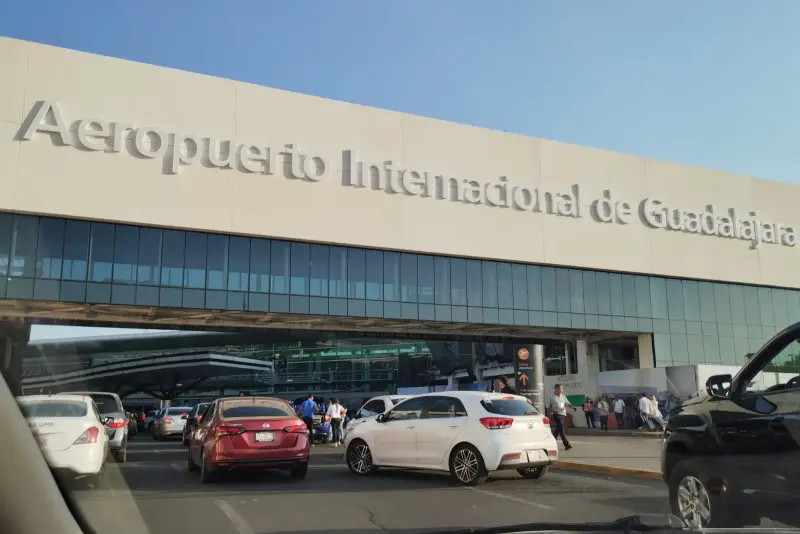

Proveedor oficial
Transporte para la Cumbre Iberoamericana de Seguros
Traslados y apoyo local para asistentes y acompañantes en Guadalajara.
Cobertura del 3 al 6 de noviembre de 2026
Solicitar información por WhatsAppServicio oficial
Una llegada coordinada para tu agenda
Organizamos el traslado entre el Aeropuerto Internacional de Guadalajara (GDL) y Hyatt Regency Andares, con atención para las fechas de la Cumbre.
- Traslados aeropuerto GDL ↔ Hyatt Regency Andares.
- Tours de apoyo para asistentes y acompañantes.
- Atención por WhatsApp en español.

Planificación sencilla
Reserva con anticipación
Las fechas de la Cumbre concentran llegadas y salidas en pocos días. Al escribirnos con tu itinerario podremos coordinar el punto de encuentro, el horario y el tipo de servicio que necesitas.
Tarifa de grupo disponible.
Experiencias para tu estancia
Tours para asistentes y acompañantes
Conoce Jalisco entre compromisos, con opciones culturales y gastronómicas que parten desde Guadalajara.
Tarifas exclusivas para asistentes de la Cumbre — solicítalas por WhatsApp
Comparte tus fechas y necesidades para recibir atención personalizada.
Hablar con Xalisco Trips